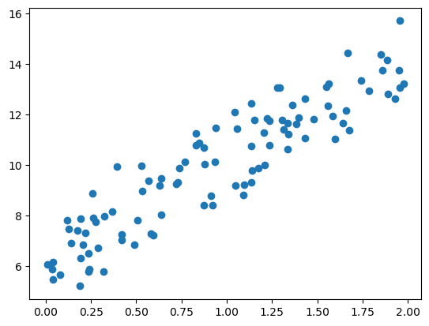
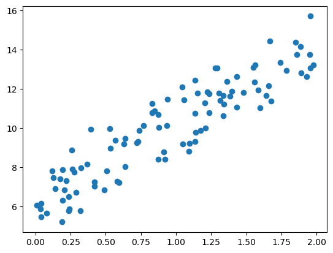
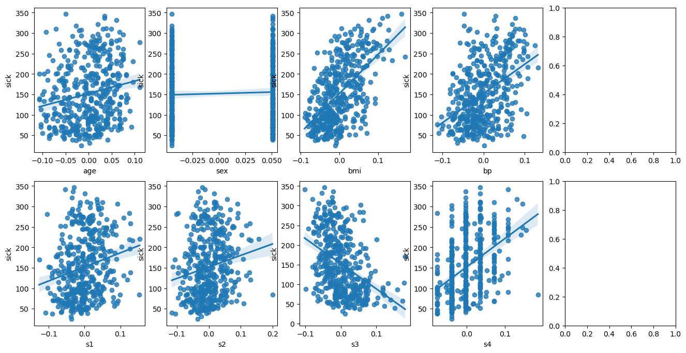
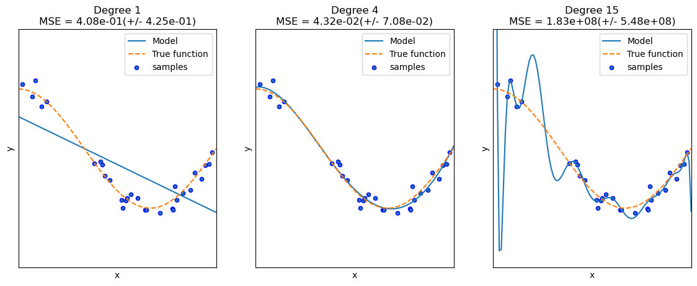

import numpy as np
import matplotlib.pyplot as plt
%matplotlib inline
np.random.seed(0)
# y = 4x+6을 근사(w1=4, w0=6). 임의의 값은 노이즈를 위해 만듦.
X = 2 * np.random.rand(100, 1)
y = 6 + 4*X+np.random.randn(100,1)
# X, y 데이터 세트 산점도로 시각화
plt.scatter(X,y)
August 15, 2025
import numpy as np
import matplotlib.pyplot as plt
%matplotlib inline
np.random.seed(0)
# y = 4x+6을 근사(w1=4, w0=6). 임의의 값은 노이즈를 위해 만듦.
X = 2 * np.random.rand(100, 1)
y = 6 + 4*X+np.random.randn(100,1)
# X, y 데이터 세트 산점도로 시각화
plt.scatter(X,y)
# get_weight_update() 함수
# 입력 배열 X값에 대한 예측 배열 y_pred는 np.dot(X, w1.T) + w0으로 구한다.
# np.dot 내적을 활용한 것!
# w1과 w0를 업데이트할 w1_update, w0_updata를 반환.
def get_weight_updates(w1, w0, X, y, learning_rate=0.01):
N = len(y)
# 먼저 w1_updata, w0_updata를 각각 w1, w0의 shape와 동일한 크기를 가진 0 값으로 초기화
w1_update = np.zeros_like(w1)
w0_update = np.zeros_like(w0)
# 예측 배열 계산하고 예측과 실제 값의 차이 계산
y_pred = np.dot(X, w1.T) + w0
diff = y-y_pred
# w0_update를 dot 행렬 연산으로 구하기 위해 모두 1값을 가진 행렬 생성
w0_factors = np.ones((N, 1))
# w1과 w0을 업데이트할 w1_updata와 w0_update 계산
w1_update = -(2/N)*learning_rate*(np.dot(X.T, diff))
w0_update = -(2/N)*learning_rate*(np.dot(w0_factors.T, diff))
return w1_update, w0_update# 입력 인자 iters로 주어진 횟수만큼 반복적으로 w1과 w0를 업데이트 적용함.
def gradient_descent_steps(X, y, iters=10000):
# w0와 w1를 모두 0으로 초기화.
w0 = np.zeros((1, 1))
w1 = np.zeros((1, 1))
# 인자로 주어진 iters만큼 반복적으로 get_weight_updates() 호출해 w1, w0 업데이트 수행.
for ind in range(iters):
w1_update, w0_update = get_weight_updates(w1, w0, X, y, learning_rate=0.01)
w1 = w1-w1_update
w0 = w0-w0_update
return w1, w0def get_cost(y, y_pred):
N = len(y)
cost = np.sum(np.square(y-y_pred))/N
return cost
w1, w0 = gradient_descent_steps(X, y, iters=1000)
print("w1: {0:.3f} w0:{1:.3f}".format(w1[0,0], w0[0,0]))
y_pred = w1[0,0] * X + w0
print('Gradient Descent Total Cost: {0:.4f}'.format(get_cost(y,y_pred)))w1: 4.022 w0:6.162
Gradient Descent Total Cost: 0.9935# 미니 배치 확률적 경사 하강법 구현: 시간 단축
def stochastic_gradient_descent_steps(X, y, batch_size=10, iters=1000):
w0 = np.zeros((1,1))
w1 = np.zeros((1,1))
for ind in range(iters):
np.random.seed(ind)
# 전체 X,y 데이터에서 랜덤하게 batch_size만큼 데이터를 추출해 sample_X, sample_y로 저장
stochastic_random_index = np.random.permutation(X.shape[0])
sample_X = X[stochastic_random_index[0:batch_size]]
sample_y = y[stochastic_random_index[0:batch_size]]
# 랜덤하게 batch_size만큼 추출된 데이터 기반으로 w1_update, w0_update 계산 후 업데이트
w1_update, w0_update = get_weight_updates(w1, w0, sample_X, sample_y, learning_rate=0.01)
w1 = w1-w1_update
w0 = w0-w0_update
return w1, w0
class sklearn.linear_model.LinearRegression(fit_intercept=True, normalize=False, copy_X=True, n_jobs=1)Cell In[11], line 1 class sklearn.linear_model.LinearRegression(fit_intercept=True, normalize=False, copy_X=True, n_jobs=1) ^ SyntaxError: invalid syntax
: 피처 간의 상관관계가 너무 높아 분산이 매우 커져서 오류에 민감해지는 문제. * 상간관게가 높은 피처가 많은 경우 -> 독립적인 중요한 피처만 남기고 제거하거나 규제를 적용
import numpy as np
import matplotlib.pyplot as plt
import pandas as pd
import seaborn as sns
from scipy import stats
from sklearn.datasets import load_diabetes
import warnings
warnings.filterwarnings('ignore')
%matplotlib inline
# boston 데이터 세트
diabetes = load_diabetes()
diabetesDF = pd.DataFrame(diabetes.data, columns=diabetes.feature_names)
diabetesDF['sick'] = diabetes.target
print("데이터 크기", diabetesDF.shape)
diabetesDF.head()데이터 크기 (442, 11)| age | sex | bmi | bp | s1 | s2 | s3 | s4 | s5 | s6 | sick | |
|---|---|---|---|---|---|---|---|---|---|---|---|
| 0 | 0.038076 | 0.050680 | 0.061696 | 0.021872 | -0.044223 | -0.034821 | -0.043401 | -0.002592 | 0.019907 | -0.017646 | 151.0 |
| 1 | -0.001882 | -0.044642 | -0.051474 | -0.026328 | -0.008449 | -0.019163 | 0.074412 | -0.039493 | -0.068332 | -0.092204 | 75.0 |
| 2 | 0.085299 | 0.050680 | 0.044451 | -0.005670 | -0.045599 | -0.034194 | -0.032356 | -0.002592 | 0.002861 | -0.025930 | 141.0 |
| 3 | -0.089063 | -0.044642 | -0.011595 | -0.036656 | 0.012191 | 0.024991 | -0.036038 | 0.034309 | 0.022688 | -0.009362 | 206.0 |
| 4 | 0.005383 | -0.044642 | -0.036385 | 0.021872 | 0.003935 | 0.015596 | 0.008142 | -0.002592 | -0.031988 | -0.046641 | 135.0 |
count 442.000000
mean 152.133484
std 77.093005
min 25.000000
25% 87.000000
50% 140.500000
75% 211.500000
max 346.000000
Name: sick, dtype: float64fig, axs = plt.subplots(figsize=(16, 8), ncols=5, nrows=2)
lm_features = ['age', 'sex', 'bmi', 'bp', 's1', 's2', 's3', 's4', 's5', 's6']
for i, feature in enumerate(lm_features):
row = int(i/4)
col = i%4
sns.regplot(x=feature, y='sick', data=diabetesDF, ax=axs[row][col])--------------------------------------------------------------------------- IndexError Traceback (most recent call last) Cell In[23], line 6 4 row = int(i/4) 5 col = i%4 ----> 6 sns.regplot(x=feature, y='sick', data=diabetesDF, ax=axs[row][col]) IndexError: index 2 is out of bounds for axis 0 with size 2

from sklearn.model_selection import train_test_split
from sklearn.linear_model import LinearRegression
from sklearn.metrics import mean_squared_error, r2_score
y_target = diabetesDF['sick']
X_data = diabetesDF.drop(['sick'], axis=1, inplace=False)
X_train, X_test, y_train, y_test = train_test_split(X_data, y_target, test_size=0.3, random_state=156)
# 선형 회귀 OLS로 학습/예측/평가 수행
lr = LinearRegression()
lr.fit(X_train, y_train)
y_preds = lr.predict(X_test)
mse = mean_squared_error(y_test, y_preds)
rmse = np.sqrt(mse)
print('MSE: {0:.3f}, RMSE: {1:.3f}'.format(mse, rmse))
print('Variance score: {0:.3f}'.format(r2_score(y_test, y_preds)))MSE: 2993.705, RMSE: 54.715
Variance score: 0.497절편 값: 152.38617209733573
회귀 계수값: [ 39.1 -251.9 468.8 305.3 -1146.9 788. 177.2 117.4 937.9
53.7]from sklearn.preprocessing import PolynomialFeatures
import numpy as np
# 다항식으로 변환한 단항식 생성, [[0, 1], [2, 3]]의 2X2 행렬 생성
X = np.arange(4).reshape(2, 2)
print("일차 단항식 계수 피처:\n", X)
# degree=2인 2차 다항식으로 변환하기 위해 PolynomialFeatures를 이용해 변환
poly = PolynomialFeatures(degree=2)
poly.fit(X)
poly_ftr = poly.transform(X)
print("변환된 2차 다항식 계수 피처:\n", poly_ftr)일차 단항식 계수 피처:
[[0 1]
[2 3]]
변환된 2차 다항식 계수 피처:
[[1. 0. 1. 0. 0. 1.]
[1. 2. 3. 4. 6. 9.]]def polynomial_func(X):
y = 1 + 2*X[:, 0]+3*X[:, 0]**2 + 4*X[:, 1]**3
return y
X = np.arange(4).reshape(2,2)
print("일차 단항식 계수 feature: \n", X)
y = polynomial_func(X)
print("삼차 다항식 결정값:\n",y)일차 단항식 계수 feature:
[[0 1]
[2 3]]
삼차 다항식 결정값:
[ 5 125]from sklearn.linear_model import LinearRegression
# 3차 다항식 변환
poly_ftr = PolynomialFeatures(degree=3).fit_transform(X)
print("3차 다항식 계수 feature: \n", poly_ftr)
# Linear Regression에 3차 다항식 계수 feature와 3차 다항식 결정값으로 학습 후 회귀 계수 확인
model = LinearRegression()
model.fit(poly_ftr, y)
print('Polynomial 회귀 계수\n', np.round(model.coef_, 2))
print('Polynomial 회귀 Shape: ', model.coef_.shape)3차 다항식 계수 feature:
[[ 1. 0. 1. 0. 0. 1. 0. 0. 0. 1.]
[ 1. 2. 3. 4. 6. 9. 8. 12. 18. 27.]]
Polynomial 회귀 계수
[0. 0.18 0.18 0.36 0.54 0.72 0.72 1.08 1.62 2.34]
Polynomial 회귀 Shape: (10,)from sklearn.preprocessing import PolynomialFeatures
from sklearn.linear_model import LinearRegression
from sklearn.pipeline import Pipeline
import numpy as np
def polynomial_func(X):
y = 1 + 2*X[:, 0] + 3*X[:,0]**2 + 4*X[:,1]**3
return y
# Pipeline 객체로 Streamline하게 Polynomial Feature 변환과 Linear Regression을 연결
model = Pipeline([('poly', PolynomialFeatures(degree=3)),
('linear', LinearRegression())])
X = np.arange(4).reshape(2,2)
y = polynomial_func(X)
model = model.fit(X,y)
print('Polynomial 회귀 계수:\n', np.round(model.named_steps['linear'].coef_, 2))Polynomial 회귀 계수:
[0. 0.18 0.18 0.36 0.54 0.72 0.72 1.08 1.62 2.34]import numpy as np
import matplotlib.pyplot as plt
from sklearn.pipeline import Pipeline
from sklearn.preprocessing import PolynomialFeatures
from sklearn.linear_model import LinearRegression
from sklearn.model_selection import cross_val_score
%matplotlib inline
def true_fun(X):
return np.cos(1.5 * np.pi * X)
np.random.seed(0)
n_samples = 30
X = np.sort(np.random.rand(n_samples))
y = true_fun(X) + np.random.randn(n_samples) * 0.1# 다항식 차수를 바꿔가면서 그리기
plt.figure(figsize=(14, 5))
degrees = [1,4, 15]
for i in range(len(degrees)):
ax = plt.subplot(1, len(degrees), i+1) # plt.subplot(nrows,ncols,index)
plt.setp(ax, xticks=(), yticks=())
# 개별 degree별로 Polynomial 변환
polynomial_features = PolynomialFeatures(degree=degrees[i], include_bias=False)
linear_regression = LinearRegression()
pipeline = Pipeline([('polynomial_features', polynomial_features),
('linear_regression', linear_regression)])
pipeline.fit(X.reshape(-1, 1), y)
# 교차검증으로 다항 회귀 평가
scores = cross_val_score(pipeline, X.reshape(-1,1), y, scoring='neg_mean_squared_error', cv=10)
# 파이프라인ㅇ르 구성하는 세부 객체를 접근하는 named_steps['객체명']을 이용해 회귀 계수 추출
coefficients = pipeline.named_steps['linear_regression'].coef_
print('\nDegree {0} 회귀 계수는 {1} 입니다'.format(degrees[i], np.round(coefficients,2)))
print('Degree {0} MSE는 {1}입니다.'.format(degrees[i], -1*np.mean(scores)))
# 0부터 1까지 테스트 데이터 셋을 100개로 나눠 예측 수행
# 테스트데이터에 회귀를 수행하고 예측곡선과 실제 곡선을 그려서 비교
X_test = np.linspace(0, 1, 100)
# 예측값 곡선
plt.plot(X_test, pipeline.predict(X_test[:, np.newaxis]), label='Model')
# 실제값 곡선
plt.plot(X_test, true_fun(X_test), '--', label='True function')
plt.scatter(X, y, edgecolor='b', s=20, label='samples')
plt.xlabel('x'); plt.ylabel('y'); plt.xlim((0, 1)); plt.ylim((-2, 2)); plt.legend(loc='best')
plt.title('Degree {}\nMSE = {:.2e}(+/- {:.2e})'.format(degrees[i], -scores.mean(), scores.std()))
plt.show()
Degree 1 회귀 계수는 [-1.61] 입니다
Degree 1 MSE는 0.40772896250986834입니다.
Degree 4 회귀 계수는 [ 0.47 -17.79 23.59 -7.26] 입니다
Degree 4 MSE는 0.04320874987231747입니다.
Degree 15 회귀 계수는 [-2.98295000e+03 1.03899930e+05 -1.87417069e+06 2.03717225e+07
-1.44873988e+08 7.09318780e+08 -2.47066977e+09 6.24564048e+09
-1.15677067e+10 1.56895696e+10 -1.54006776e+10 1.06457788e+10
-4.91379977e+09 1.35920330e+09 -1.70381654e+08] 입니다
Degree 15 MSE는 182815433.47648773입니다.
=> degree 4 처럼 balanced 모델이 좋은 모델이다!